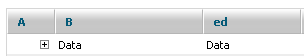
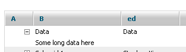
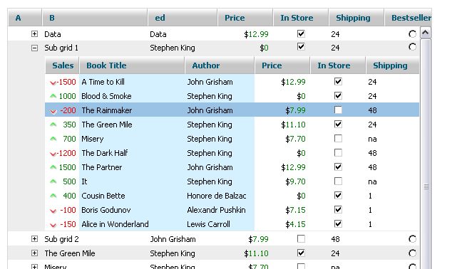

Sub rows - new data dimension
Sometimes grid data may contain some extra content, that is too big to be included in a grid line. But on the other hand, this content is related to the grid row and needs to be shown with it.
To implement such "main record -> details" pattern sub_rows can be used. Basically, a sub_row is a hidden row attached to the main one, which may be shown|hidden by using the related control.
Sub rows basics
A simple sub row can be created by using "sub_row" excell type:
grid.setColTypes("sub_row,ed,ed");
And later in XML we'll have the following code:
<rows>
<row id="some">
<cell> Some long data here .... </cell><cell>Data </cell><cell>Data </cell>
<row>
</rows>
Immediately after loading the row will look like this:

And after clicking "" image it will look in the following way:

The content of the sub_row may contain any HTML tags, so the additional data may be not only the content itself, but some kind of a form, for example.
In case of adding a new row with a sub row, the value of the row is defined in the standard manner:
grid.addRow(id,["Some long data here ....","Data","Data"]);
API of the grid allows you to expand|collapse the sub row programmatically in such a way:
grid.cells(i,j).open();
grid.cells(i,j).close();
Loading sub rows by AJAX
By default the data of the sub_row is provided as a part of the main data which is not very useful if the additional data is big.
In such case sub_row_ajax column type may be used. It works exactly the same as the default one, but it will treat cell value as a link to the external file:
grid.setColTypes("sub_row_ajax,ed,ed");
Later in XML we'll have the following code:
<rows>
<row id="some">
<cell>my_data.html</cell><cell>Data </cell><cell>Data </cell>
<row>
</rows>
And in "my_data.html" there will be the following line:
Some long data here
After pressing "" image, the component will load "my_data.html" and will show its content as a sub row of the related one.
Loading sub grid
As we can load any content as a value of the sub row, one of the possible use cases is to load a sub grid as a sub row. While it can be achieved with the usage of a sub_row only, the component also provides a special type of excell sub_row_grid, which allows you to simplify such task.
In case of sub_row_grid usage, the value of the cell is treated as an URL to the configuration XML of the sub grid:
grid.setColTypes("sub_row_grid,ed,ed");
Later in XML we'll have the following code:
<rows>
<row id="some">
<cell>my_grid.xml</cell><cell>Data </cell><cell>Data </cell>
<row>
</rows>
And in my_data.html there will be the following lines:
<rows>
<head>
... configuration of grid here ...
</head>
... data of grid here ...
</rows>
After clicking "" image, the component will fetch configuration XML and build the subgrid based on it:

As the sub grid has different configuration, it can have a different set of columns and its style can differ from that of the main grid.
The sub grid object can be accessed in the following way:
grid.cells(i,j).getSubGrid();
Sub grid events and sub grid customizing
There are two events in the component that allow you to customize the sub grid:
a) onSubGridCreated
It is called when the sub grid object is created (triggered by sub_row opening), but before data is loaded from the related XML file.
It provides the following values:
- sub grid object;
- row id;
- cell index;
- sub_row_grid cell value.
b) onSubGridLoaded
This event is called when the sub grid has loaded the configuration XML and parsed its values.
It provides the following values:
- sub grid object;
- row id;
- cell index;
- sub_row_grid cell value.
Events can be used to change the grid behavior:
grid.attachEvent("onSubGridCreated",function(subgrid){
subgrid.enableMultiselect(true);
subgrid.enableEditEvents(false,false,false);
return true; // mandatory!
})
Add|preselect some data after configuration was loaded:
grid.attachEvent("onSubGridLoaded",function(subgrid){
subgrid.addRow(someid,value);
subgid.selectCell(someid,0);
})
Events can be used to fully change the way the sub grid is loaded. E.g. the sub grid can be built manually:
grid.attachEvent("onSubGridCreated",function(subgrid){
subgrid.setHeader("A,B,C");
subgrid.setColTypes("ro,ro,ro");
subgrid.setInitWidths("100,100,100")
subgrid.init();
return false; // block default behavior
})
Or the sub grid can be loaded from XML string:
grid.attachEvent("onSubGridCreated",function(subgrid,id,ind,data){
subgrid.loadXMLString(data); // use the current data as configuration xml
return false; // prevent default behavior
})
© DHTMLX, 2008